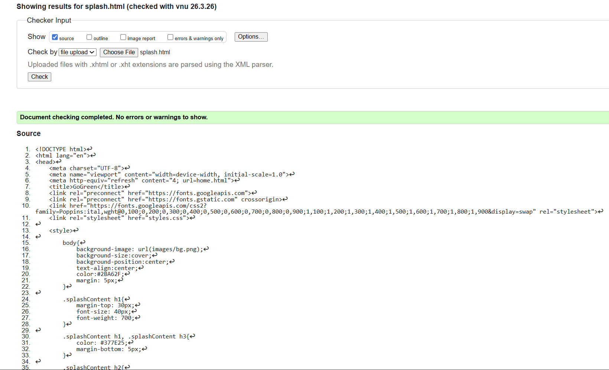
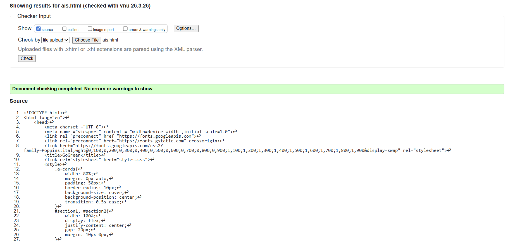

Splash Screen validation report
The splash screen page was validated using the W3C HTML validator, and no errors or warnings were identified. The page follows proper HTML structure, including the use of semantic heading elements and descriptive alt text for images, which improves accessibility.
Accessibility considerations were further enhanced through the use of an aria-label on the skip button, allowing screen reader users to clearly understand its function. The CSS loader animation was implemented using keyframes, ensuring a clear separation between structure and presentation.
Overall, the page is well structured, functional, and meets validation standards. It was also tested across different screen sizes to ensure responsiveness and a consistent user experience.

Back to Page Editor page
Include a link back to the corresponding section of the Page Editor.
AIS Page validation report
The AIS page was validated using the W3C HTML validator. Initial validation identified minor issues, including an empty heading element and an incorrect heading hierarchy where a level was skipped. These issues were resolved by adding default content to the dynamic heading and correcting the heading structure to maintain proper semantic order.
After these corrections, the page met validation standards with no remaining errors. The page also includes accessibility considerations such as descriptive alt text and clear content structure, ensuring improved usability.

Back to Page Editor page
Include a link back to the corresponding section of the Page Editor.
Content Page validation report
Include a short reflection on the validation report for the pages you implemented.
Back to Page Editor page
Include a link back to the corresponding section of the Page Editor.